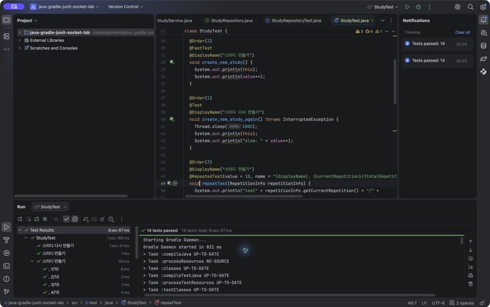
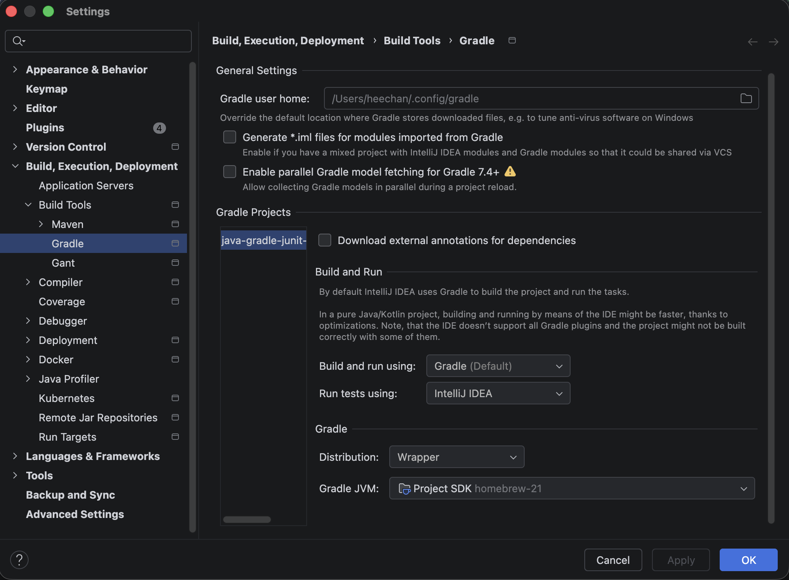

JUnit 실습에서
무엇을 검증했는가
Java 테스트 기초를 따라 치며 익힌 문법만 나열하지 않고, 실제로 실행한 범위와 막혔던 지점, 아직 남은 과제를 함께 정리했다.
출발점
목표는 Java 문법을 완성하는 것이 아니라, 테스트 code가 어떤 구조로 실행되는지 직접 보는 것이었다.
처음에는 테스트를 작성하면 assertion의 성공과 실패만 확인하면 된다고 생각했다. 실습을 진행하면서 테스트에는 실행 전후 lifecycle, 여러 입력을 다루는 방법, 느린 테스트를 감지하는 Extension, 협력 객체의 동작을 대신하는 mock까지 서로 다른 층이 있다는 것을 확인했다.
직접 실행한 범위
각 항목은 현재 저장소의 code와 Gradle test 결과로 다시 확인했다.
-
기본 test와 lifecycle —
@Test,@DisplayName,@BeforeEach,@AfterEach,@BeforeAll,@AfterAll -
여러 조건의 test —
@RepeatedTest로 10회 반복하고,@ParameterizedTest와@CsvSource로 입력을 바꿔 실행 -
분류와 확장 —
@FastTest,@SlowTest를 합성 annotation으로 만들고,FindSlowTestExtension에서 실행 시간을 측정 -
Mockito —
given으로 협력 객체의 응답을 준비하고,then(...).should()로 호출 여부를 검증
@RepeatedTest(
value = 10,
name = "{displayName}, {currentRepetition}/{totalRepetitions}"
)
void repeatTest(RepetitionInfo repetitionInfo) {
System.out.println(
"test" + repetitionInfo.getCurrentRepetition()
+ "/" + repetitionInfo.getTotalRepetitions()
);
}code와 실행 결과를 함께 남겼다
최종 화면만으로 학습 과정 전체를 알 수는 없지만, 어떤 code가 어떤 결과를 만들었는지는 다시 확인할 수 있다.

StudyTest의 반복·매개변수 test 14개가 통과한 화면.
전체 프로젝트에서는 CalculatorTest와 StudyServiceTest를 포함해 19개가 통과했다.
가장 오래 막힌 곳은 test code 밖에 있었다
테스트 내용보다 dependency와 runner가 먼저 문제였고, 실행 도구에 따라 결과가 보이는 방식도 달랐다.
junit-platform-launcher를 찾지 못해 test가 시작되기 전에 중단됐다.
Run tests using을 IntelliJ IDEA로 바꾸자 기대한 이름으로 결과를 볼 수 있었다.

이 경험 뒤에는 test code만 보지 않고, dependency → test engine → runner → 결과 표시 순서로 범위를 좁히게 됐다.
2026년 7월 29일 다시 검증한 결과
IDE의 이전 실행 표시가 아니라 Gradle task를 강제로 다시 실행했다.
$ ./gradlew test --rerun-tasks
BUILD SUCCESSFUL in 5s
# build/test-results/test/TEST-*.xml 합산
19 tests · 0 failures · 0 errors · 0 skippedMockito가 inline mock maker를 사용하기 위해 스스로 Java agent를 붙인다는 warning은 남아 있다. 현재 test는 통과하지만 future JDK에서는 agent 설정을 build에 명시해야 한다.
확인된 것과 아직 남은 것
통과한 test 수와 이해한 범위를 같은 의미로 취급하지 않았다.
지금 설명할 수 있는 것
- lifecycle callback이 test 전후에 실행되는 순서
- 반복·매개변수 test가 여러 실행 결과를 만드는 방식
- Extension이 실행 시간을 관찰하고 경고를 남기는 방식
- mock의 응답을 준비하고 interaction을 검증하는 기본 흐름
다음에 정리할 것
- 강의 실험과 유지할 test를 class 단위로 분리하기
- 중복된 Mockito stubbing과 예제 이름 정리하기
- Mockito Java agent warning을 build 설정으로 해결하기
- mock 중심 test와 실제 repository 통합 test의 경계 비교하기
이번 실습에서 남은 기준
“test가 통과했다”에서 끝내지 않고, 무엇을 검증했고 무엇은 검증하지 않았는지 함께 설명할 수 있어야 한다.